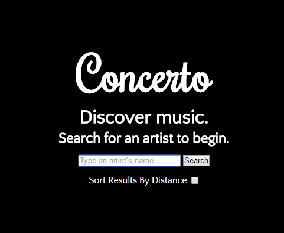
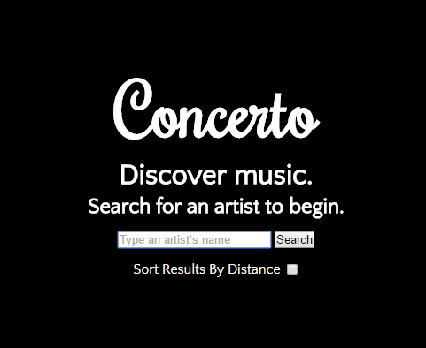
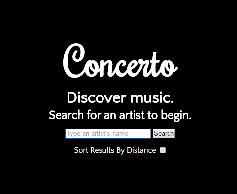
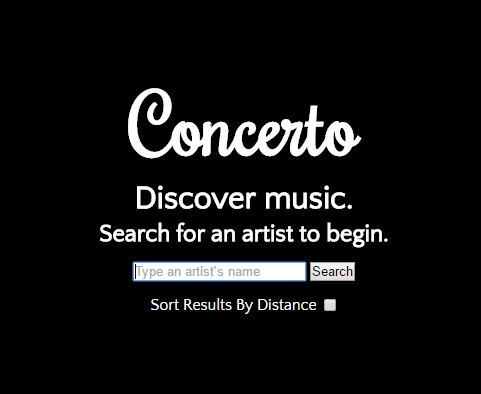

Use Concerto
 



Concerto is a web app that lets users search for an artist, simultaneously getting results for upcoming shows by the artists and previews of that artist's work from Spotify.
The app uses jQuery for making AJAX calls to web APIs and for some animations. It uses the Bandsintown API to retrieve the concert listing, and Spotify's API to retrieve the song previews, including the album covers which are clicked to activate the preview. The Bandsintown API returns the latitude and longitude of the concert venue, and then uses a function that can get the distance between two latitude-longitude coordinate pairs to get the distance between the user and the venues. This is only done if the user decides to sort the concerts by distance from them, which uses the HTML geolocation API.
This was a solo project, and my first experience with the API's used. This required doing research into each API to find out the layout of the JSON data they return and putting that onto the page, as well as creating the CSS for the page layout itself.
This was my first extensive foray into the use of web APIs. It was interesting to figure out how to communicate between multiple APIs and HTML5 technologies, as well as designing an app that created a cohesive experience based on the possibilities made available by the data that the web services decided to return. It was a great learning experience, because it taught me how to navigate the large JSON objects returned by these web APIs, and how to manipulate them as I need to mould an experience from the data. It's simple, but it works.